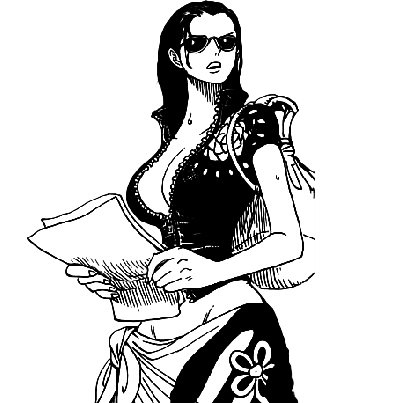

Nico Robin (ニコ・ロビン, Niko Robin), otherwise known as "Devil Child", is a fictional character in the One Piece franchise created by Eiichiro Oda. The character made her first appearance in the 114th chapter of the series, which was first published in Japan in Shueisha's Weekly Shōnen Jump magazine on November 22, 1999. In the series, Robin is introduced as an antagonist, but eventually becomes the seventh member of the Straw Hat Pirates crew and the sixth to join. Acting as the group's archaeologist and historian, Robin is a Devil Fruit user who possess the power of the Flower-Flower Fruit, allowing her to sprout replicas of her limbs, and later her entire body, from any surface. As the only survivor of the island of Ohara, Robin is the only known living person in the world of One Piece with the ability to read the ancient stones called Poneglyphs, something considered threatening by the World Government, which forbids the practice. Robin has become extremely popular and a breakout character in anime and manga fandom. She has also appeared in several adaptations based on the manga, including the anime television series in which she is voiced by Yuriko Yamaguchi and Anzu Nagai as a child in the original Japanese language, as well as by Veronica Taylor and Stephanie Young and Jad Saxton as a child in the English versions. She has also become a popular subject of cosplay, causing a trend in Japan where women attempted to replicate her iconic costumes.
For more info visit this page